Visual explainer
# 腿部 Jiggle 正式接入与臀腿接缝修复
结果
已将上一轮右侧「姿态预载」的思路接入正式运行，并重新生成普通 BP_VamCharacter。坐姿下异常横向折线在本次截图和运动检查中消除，腿部仍有惯性晃动与停止后的衰减。UE 编译、15 项回归、主工程 Editor / PIE 均通过。视觉自然程度仍请以本页真实录像验收。
代码提交：8625586，已推送 origin/fix/allbody。
先看录像
下方并排录像均为 左：旧生产角色；右：新正式角色。不是上一轮诊断探针。相同实际主骨骼矩阵、相机、灯光、固定时间步，逐帧矩阵最大差为 0。
- 屈伸：髋、膝同步屈伸，4 秒后保持姿态，观察余振。
- 迈步：左右交替屈伸的原地关节重放，4 秒后停止。不是完整的落脚、地面接触或步态系统。
- 急停：根节点前后 2 cm / 1 Hz 激励，3 秒后停止。
- 坐姿急停：同样激励，专门检验臀腿接缝及坐姿活动范围。
每段 7 秒、210 帧、30 fps；模拟步长 1/60 秒，求解每帧 4 子步。编码帧率不是实测游戏帧率。Contact 关闭，Glute 与 Leg Jiggle 开启，静态辅助骨和 Corrective 保留，Breast Jiggle 关闭以隔离腿部。
根因与正式修复
1. 姿态重力残差占用了腿部活动范围
旧方案把站立参考重力直接用于弯腿后的局部支撑坐标。坐姿时产生很大的静态位移，推高非线性刚度，随后又被输出包络压缩，真正的惯性晃动反而很小。
新 Leg Profile 使用 Schema 2：把当前已蒙皮姿态作为承重后的平衡形态，在当前支撑朝向下平衡重力。没有逐帧重置求解器，世界空间惯性和速度继续保留。旧 Schema 1 资产保持原行为，因此旧截图仍可复现。
这会改变旧方案的静态下垂，符合你选择右侧效果的方向。它是低阶辅助骨动力学，不等同于完整肌肉、脂肪连续体模拟。
2. 八槽位分支制造了动态权重断层
BlendLegWeights() 以前在原始影响数达到 8 时直接返回；相邻顶点却可能把大量权重交给单个腿部节点。原本连续的表面在 Jiggle 开启后出现折线。
新流程先保留完整、连续的区域辅助骨权重，再用 UE 5.8 原生 12 influence 容量完成最终导出。最终拓扑细分、法线校验、实际量化权重重放同步支持这个容量。主工程与验证工程已启用 r.GPUSkin.UnlimitedBoneInfluences=True。
不是通过加大全局振幅、关闭 Jiggle 或平滑整个人物来掩盖接缝。原有残差保护、Glute Structure、Corrective 和行程限制继续保留。
实测证据
| 指标 | 旧版 | 新版 |
|---|---|---|
| 接缝源顶点 11274 的腿部辅助骨总权重 | 0 | 0.5482 |
| 相邻源顶点 16801 的辅助骨总权重 | 0.6075 | 0.6075 |
| 坐姿 Jiggle 后，大腿固定区域最大面夹角 | 46.53° | 23.68° |
| 坐姿运动全段最大面夹角 | 49.24° | 24.54° |
| 210 帧中存在 >45° 局部边的帧数 | 210 | 0 |
| 坐姿大腿区域时间位移 RMS | 0.463 mm | 1.122 mm |
| 坐姿右大腿节点运动偏移峰值 | 0.282 mm | 2.304 mm |
局部面夹角使用保留的源拓扑与固定 bind-space 大腿范围，覆盖 606 条相邻边。45° 是工程观察阈值，不是解剖学标准。全段几何检查使用真实 A1 表面、最终量化权重及录制的骨骼平移，已证明固定坐姿骨骼旋转不变；不是每帧 GPU 网格读回，也不声称通过全局自交检查。
四种动作所有记录均为有限值，每帧 4 子步，无硬行程修正；停止后的最后一秒，各腿段节点相对最终平衡的残余偏差最高约 0.024 mm。屈伸和迈步的总偏移不一定更大，因为已经去掉随姿态变化的错误静态重力偏移。
静态形态与运行回归
- 新资产已完成 build / reload / verify，使用新最终权重重新烘焙 Corrective，未沿用旧资产验收。
- B1 在实际最终量化权重下重放 20 个 authored targets，最大目标误差 0.0001474 cm，残差层新增 unsafe triangles 为 0。这不代表所有基础目标都不存在解剖或接触问题。
- 15 项相关 UE 自动化测试通过。
- 主工程实际生成角色：Standing、Knee120、Suspended-seat、Abducted，Editor 与 PIE 静态骨骼矩阵及最终 Corrective 表面完全一致；另完成主工程 PIE 坐姿 Jiggle 验证。
- 静态新旧表面通过真实 input 映射比较：坐姿最大变化 0.0179 cm；站立 0.0139 cm；屈膝 0.0138 cm；外展最大 0.1313 cm。外展最差 input 顶点 13592，整体 RMS 0.00188 cm。不能把 RMS 小当作无变化，后视静态对照也一并保留。
- 渲染顶点从 33992 变为 34002，是骨骼调色板分区产生的复制点差异；比较使用保留的 input 映射，包括细化顶点，未使用最近邻匹配。
Editor 验证静态生成与加载；动态录像来自 PIE。当前腿部求解器按原设计只在 Game World 中推进，未声称 Editor 非播放视口也在运行动态。
在 UE 中使用
新角色路径：
/Game/VamLegProductionV3/Runtime/R_127163febbf2462df4043c83/BP_VamCharacter新配置路径：
/Game/VamLegProductionV3/Runtime/R_127163febbf2462df4043c83/RC_Runtime完整生成身份：127163febbf2462df4043c83690d42a6b9dd2e2f141b55310578a7bdb1d62ec0。
插件已安装到 SmartNPC 主工程，原二进制已备份。现有关卡里引用旧配置的角色不会被偷偷替换；验收时使用上面新 BP，或加载新 RuntimeConfiguration。之后正常构建也会生成新方案。
范围与保留证据
本轮解决姿态预载和权重参与断层，没有重新标定人体组织材料。额外重力下垂、脚底接触、服装交互及历史 GPU 接触问题单独保留，未用本轮非接触录像宣称它们通过。
第一次构建残留了已撤回的 Profile 字段，导致旧资产身份校验失败；随后完整核对独立构建源码，并重新执行 UHT、构建与验证。没有绕过身份保护。V1/V2 均未作为最终角色交付。
数据： [运动统计](motion-analysis.json) · [动态接缝](dynamic-seam.json) · [权重对照](coverage-comparison.json) · [静态回归](static-regression.json) · [主工程验证](main-validation.json) · [B1 重放](authored-targets.json) · [测试清单](tests.json) · [资产清单](bundle.json) · [安装摘要](installation.json) · [视频帧数验证](media/validation.json)
真实 UE 同条件动画
左：旧生产角色；右：新正式角色。下方每个视频已同步并排。无插帧、无慢放。建议先看坐姿急停局部。
坐姿急停：重点看臀腿交界
展开同步局部放大
屈伸
展开同步局部放大
迈步关节重放
展开同步局部放大
站立急停
展开同步局部放大
坐姿 Jiggle 开启：真实静帧
左旧右新；主材质、法线、线框使用同一姿态与光照。
材质
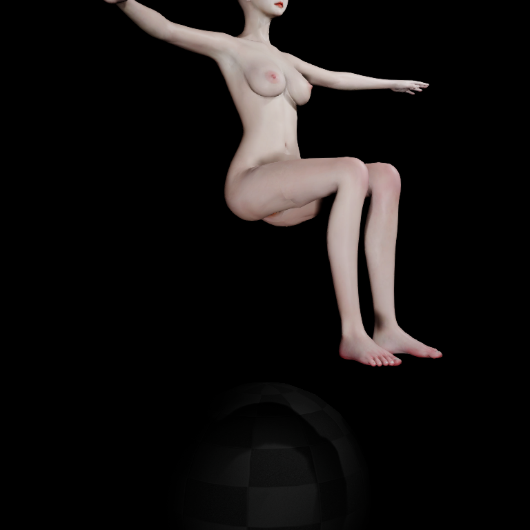
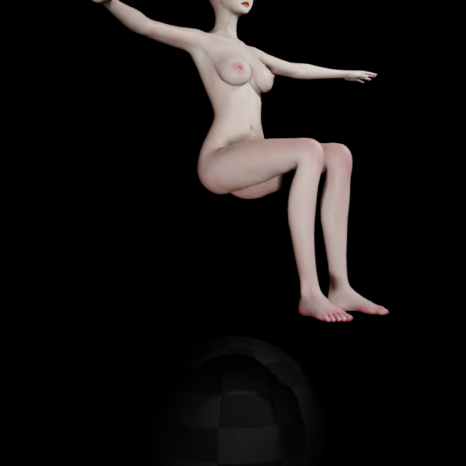
World Normal
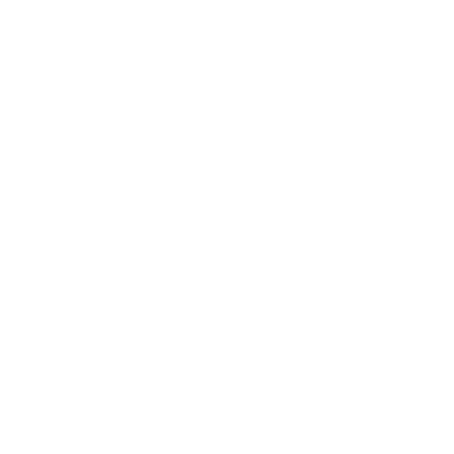
线框
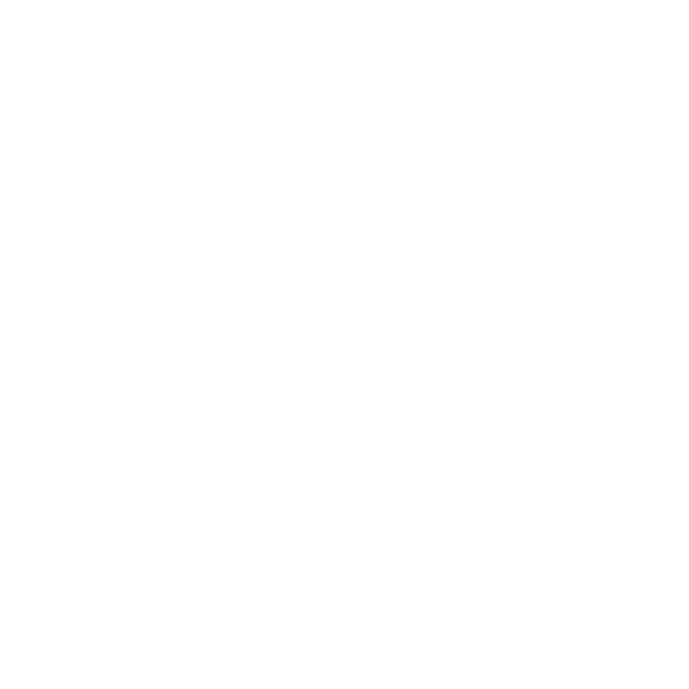
静态臀部形态回归
左：旧版 Editor；右：主工程新版 Editor。Jiggle 关闭；辅助骨、Corrective 保留。
standing
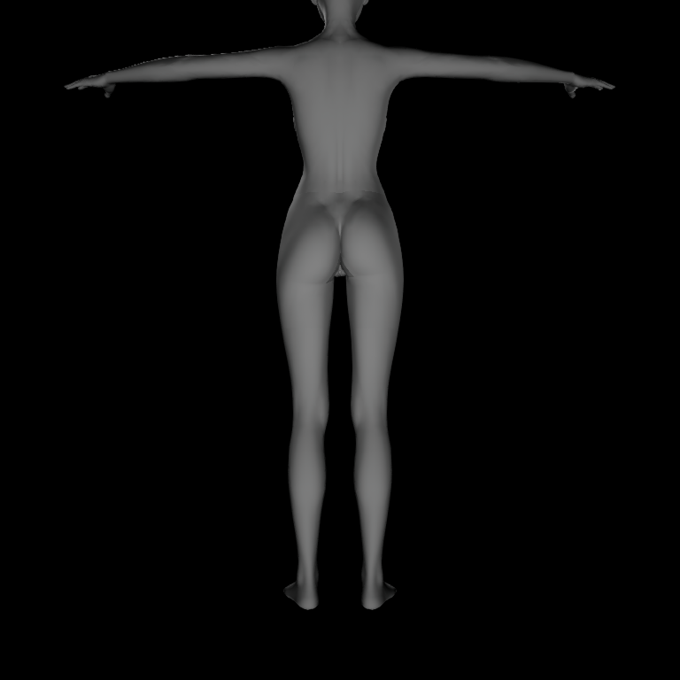
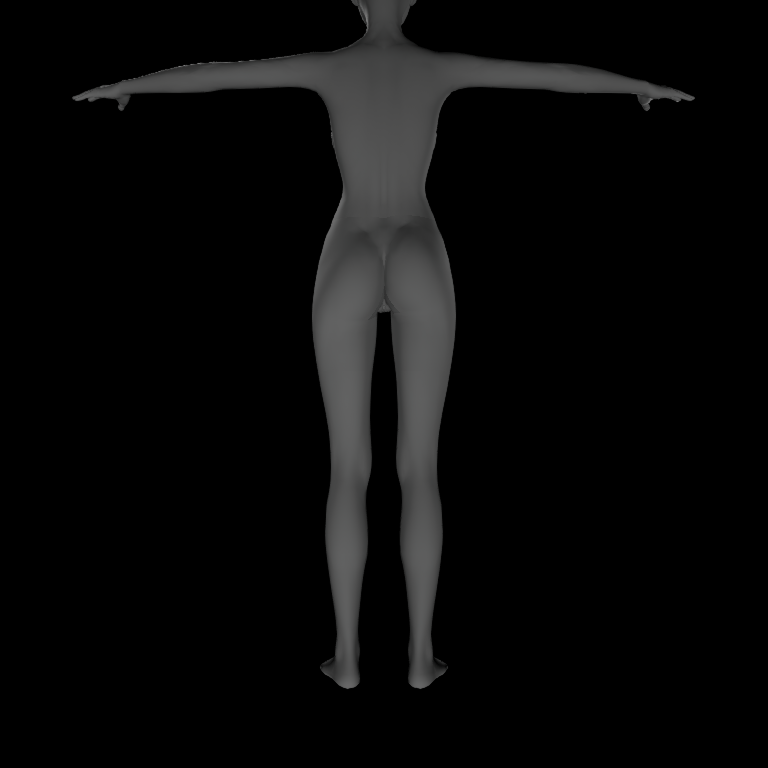
suspended-seat
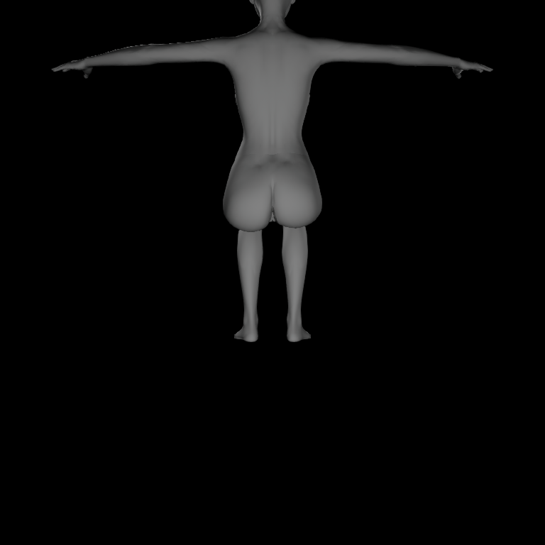
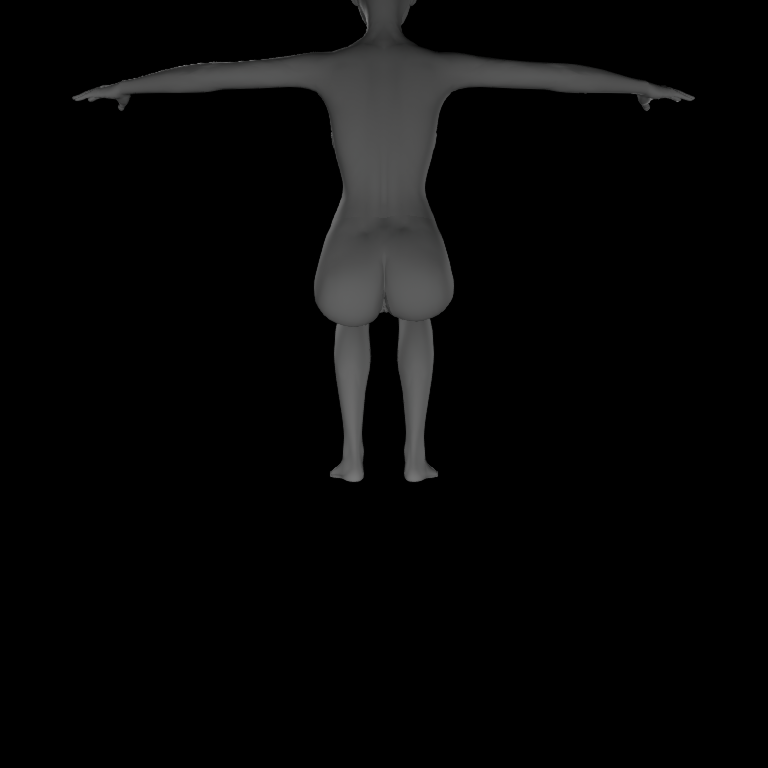
abducted
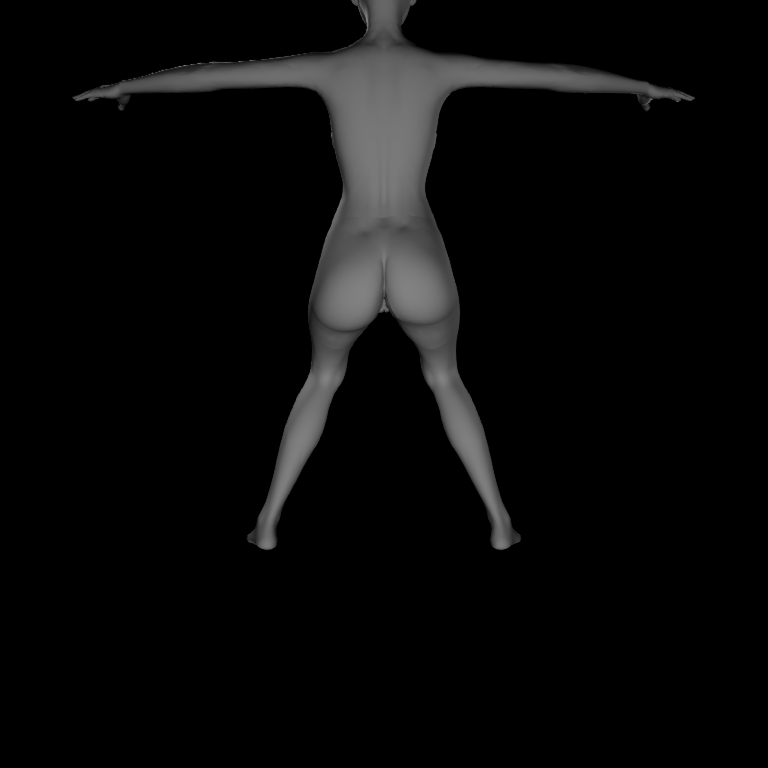
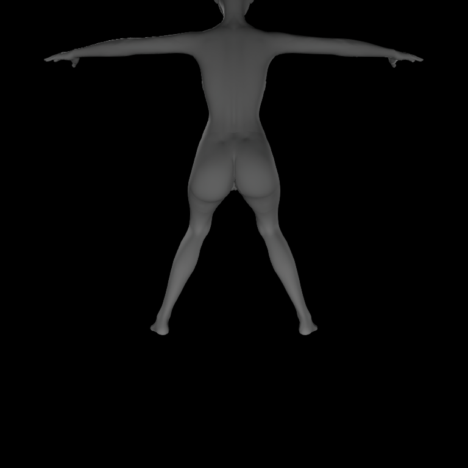
knee-120
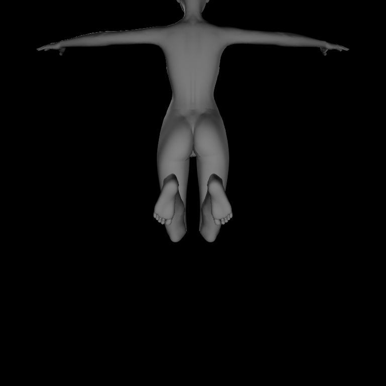
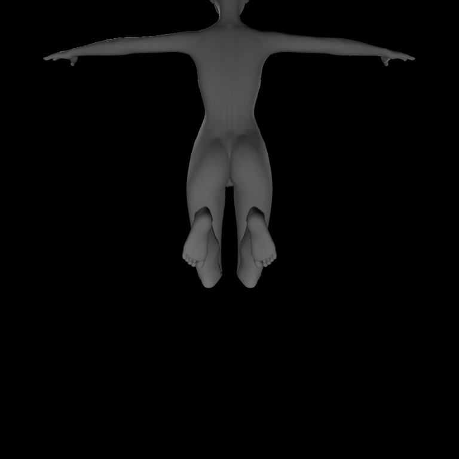